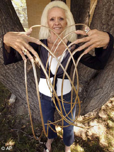
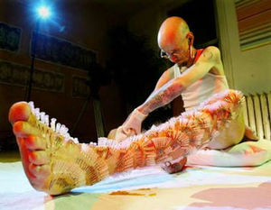

Récord Guinness
 De: La Frikipedia, la enciclopedia extremadamente seria.
De: La Frikipedia, la enciclopedia extremadamente seria.
Un premio de récord Guinness no es más que una alta humillación a aquellos que quieren llamar la atención haciendo las bobadas y gilipolleces más grandes del mundo, como por ejemplo ser el más gilipollas del mundo. Se puede compensar sabiendo que te dan una pasta (€ 10).
Historia
 ¿Cuánto hace que no se corta las uñas?
Los récord Guinness llevan en la tierra más de 6.000 millones de años, el primer récord fue ese crear el planeta con el peor destino del mundo. Otros récords más recientes fue el de hacer fuego refregando dos peñascos, el de matar un mamut a pedradas, y el de evolucionar lo más rápido posible. En esa época también se hizo el récord más famoso: a ver quien era el más feo, y quedaron empatados 32.845 personas. En la época egipcia, hacían récords como:
- Quien tumbaba al ave fénix más rápido echándole aceite.
- Quien construía la pirámide de Lego© más alta del mundo.
- Quien se devoraba más rápido al Faraón.
- Etcétera...
En la época de los mesopolitanos, solo hacían récords de haber quien construía la estatua más patética de todas. En la época griega ya hacían competiciones olímpicas que luego se recopilaban en el  (Libro récords de los Guinness). Sus récords no eran más que lo típico: Quien se saltaba un foso de 9 metros con cocodrilos, magma, tiburones, pirañas, conejitos de india; o quien alcanzaba antes la velocidad del sonido. Ya más adelante, los romanos hicieron el récord de dominar casi to europa, pero los Somos más barbaros que mi madre hicieron el récord de cargarse a tos los romanos menos 5 ó 6. Ya más adelante hacian competiciones de matanzas más sangrientas, rey más capullo, el inventor más paleto, el gilipollas más parecido a César, el que tenía más napia que Napialeón, etc hasta nuestra era, la era Friki.
(Libro récords de los Guinness). Sus récords no eran más que lo típico: Quien se saltaba un foso de 9 metros con cocodrilos, magma, tiburones, pirañas, conejitos de india; o quien alcanzaba antes la velocidad del sonido. Ya más adelante, los romanos hicieron el récord de dominar casi to europa, pero los Somos más barbaros que mi madre hicieron el récord de cargarse a tos los romanos menos 5 ó 6. Ya más adelante hacian competiciones de matanzas más sangrientas, rey más capullo, el inventor más paleto, el gilipollas más parecido a César, el que tenía más napia que Napialeón, etc hasta nuestra era, la era Friki.
Categorías
Aquí presentaré las categorías de autohumillarse, y por lo tanto, ser objeto de 123 billones risas.
Categorías de grado bajo (poco frikis)
- Beberse tantas cervezas en un tiempo récord (50 cervezas en un minuto, aunque el récord esta en 73, y lo hizo El Luisma.
- Ser el más gordo del mundo (¡¡DIOS!! ¡¡que honor (horror)!!)
- Ser el más flaco del mundo (otro pazo honor).
- Ser el mejor en algo (A este le suelen dar de palos hasta matarlo)
- Hacer el loquesea más grande del mundo.
- Estar 1 hora haciendo el pino.
- Zamparse 50 hot dogs en 5 minutos.
- Beberse 10 Red Bull (te da alas) en 1/2 minuto.
- Llegar más lejos meando contra el viento.
Categoría de grado medio (medio friki)
 A este no le gusta pincharse...
- Beberse 30 laxantes en 1 minuto.
- Cagar constantemente durante 1 semana (efectos del 1er punto)
- Ver 50 películas seguidas alimentándose de Coca Cola y sabritas.
- Estudiarse en 30 minutos el palabras del mundo.
- Aprobar un examen de el palabras del mundo.
- Sobrevivir a a 72 horas de frikadas en la Frikipedia.
- Ir nadando desde Hawai y Argentina.
- Estar metido en un cubo de agua sin respirar durante 1 hora (bah... poquito).
- Aguantar sin respirar más de una hora.
- Dejarse morder por un tigre durante cinco minutos.
- Recoger miel de un panal de inofensivas abejas africanas con rabia sin traje.
- Meterse en una piscina con bonitas pirañas.
Categoría de grado alto (hiper friki)
- Aprobar un examen de Mates de 100 preguntas.
- Ver toda la serie de Sazae-san entera y seguida, sin comer ni ir a cagar.
- Comerse 100 cucarachas (-la cucaracha! la cucaracha!... ya no puede caminá!!))
- Estudiar durante 4 días seguidos sin descanso (¡¡Dioss!! que horror!!)
- Tomar el sol sin crema solar, a 40-50 ºC, en verano, con el cielo despejado, a media vuelta cada 10 minutos, durante 8 horas.
- Escribir más de 1000 artículos en la Frikipedia, en un día, sin comer ni dormir, sin beber, y viendo la tele.
- Tener más de 3000 direcciones de correo electrónico.
- Beber 30 Litros de orina de marrano.
- Ver todos los capítulos de Naruto en Japón.
- Tirarse desde 50 metros de altitud a una piscina con lava y sobrevivir.
- Comerse 10 hamburguesas de alacrán (vivo).
- Ponerse 10.000 pinzas en una oreja.
- Tener 312.902 piercings en la cara.
- Fumar tabaco durante 5 días seguidos, sin parar.
- Cagar el mojón más grande del mundo.
- Hacer el Tour de Francia en una bici de playmovil y quedar 1º.
- Alcanzar la velocidad-luz en silla de ruedas y moviendo tú las ruedas.
- Mear 50 litros de orina en 1 minuto.
- Ser más vago que el que esta leyendo esto.
- Estar sin comer durante 20 año (solo desayuno, meriendas y cena).
- Comer en un chino durante 1 año.
- Hacer la maratón con los cojones.
- Hacer un Hare Hare Yukai encima de un monociclo en llamas sobre una cuerda que atraviesa el Santa Elena durante una erupción, terremoto, inundación y tornado, todos al mismo tiempo.
- Comer 500 hamburguesas dobles sin parar y sin tomar nada de liquido.
Autor(es):
- Nexo
- Bazuke
- DaniSkater
- Diecarr
- NRikee
- Meloinventotodo
- Vanegas9519
- Monkiki97
- Generibot
Frikipedia 2005-2016, Licencia
GFDL 1.2 - Extraído por FrikiLeaks